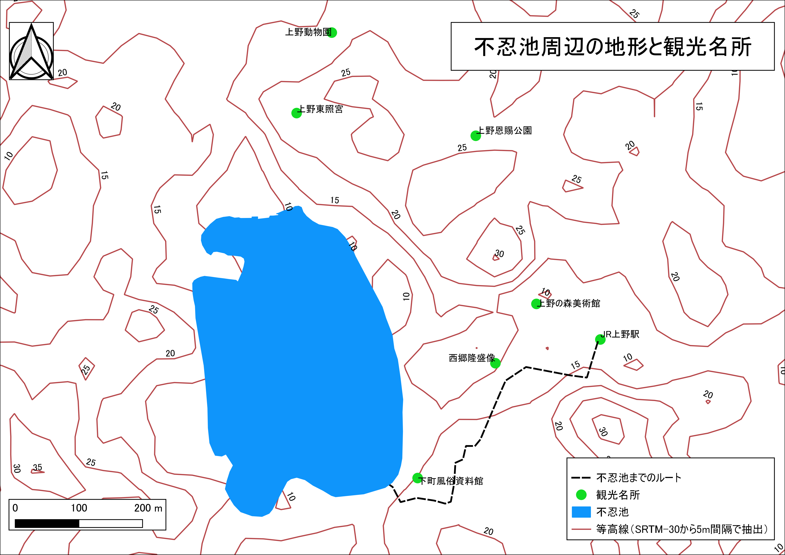

課題：空間データの統合・修正
この実習は、既存のラスタデータの結合による新規ラスターデータ作成と背景地図をトレースした新規ベクトルデータ作成を行うものです。実習で使われる用語や概念は、地理情報科学教育用スライド（GIScスライド）の4章を参照してください。以下の手順と空間データの統合・修正の教材を参考に、完成例のような地図が作成できれば、実習完了となります。
実習用データ
本実習を始める前に、tokyoをダウンロードしてください。本実習では、tokyo_srtm.tiffのみを使用します。座標変換でエラーが出る場合は、tokyo2内のどちらかを選択して実行する。
課題①_ラスタデータのクリップと新規ベクトルデータの作成
この実習では、前半で、ラスタデータを任意の範囲で切り抜く処理と、対象範囲内の等高線抽出および標高値の取得を行います。後半では、ベクトルデータの作成の練習として、完成例のような地図を作成します。以下の手順と空間データの統合・修正教材を参考に実習を進めてください。
完成例

手順
- tokyo_srtm.tiffをQGISに読み込む
- QGISビギナーズマニュアルを参考に、ブラウザパネルから地理院タイル（空中写真または標準地図）を読み込む。
- 地理院タイルを参考に、不忍池、JR上野駅周辺の範囲で、tokyo_srtm.tiffをクリップし、新規ラスタの配色を
プロパティ＞シンボロジーで5段階に調整する。※Macユーザーでgdalのエラーがでる場合は、切り抜き用のポリゴンを自作したのち、プロセッシングを利用する手法で切り取る。 - クリップしたラスタデータを用いて、5m間隔で等高線を抽出する。抽出した等高線のスタイルを整える。
- 完成例を参考にポイントデータを作成する。ポイントの作成時の属性情報は、id(Integer,幅2)、NAME(String,幅20)、とし、Id(通し番号)、NAME(建物名）を記入する。
- 地理院タイル（空中写真）を利用して、不忍池のポリゴンを作成する（おおまかでよい）。属性は、id(Integer,幅10)のみとする。ポリゴンの新規作成は、作成後右クリックで新規レイヤとして反映される点に注意する。
- 地理院タイル（空中写真）を利用して、JR上野駅から不忍池までのルートをラインデータを作成する（おおまかでよい）。
- 完成例のように作成したレイヤのスタイルを整える。次、ラベルの設定をする。ラベルは、
プロパティ＞ラベルからラベルなし→単一のラベルを選択し、ラベルにするフィールドを指定する。今回は、ポイントをNAME、ラインをELEVで設定する。 - 背景地図をオフにし、プリントコンポーザから、地図をレイアウトする。
実習用データのソース
実習用データは、無償で利用可能なデータを加工して作成したものです。データのソースは、各ファイルのREADME.mdにまとめています。